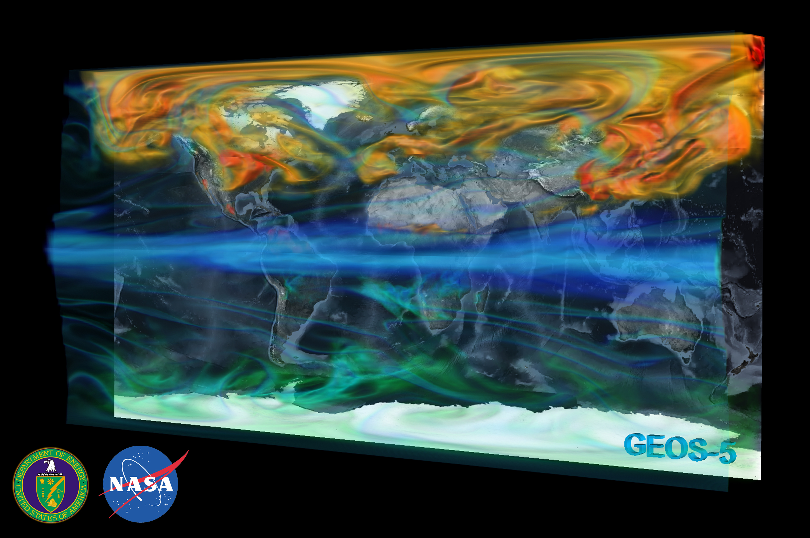
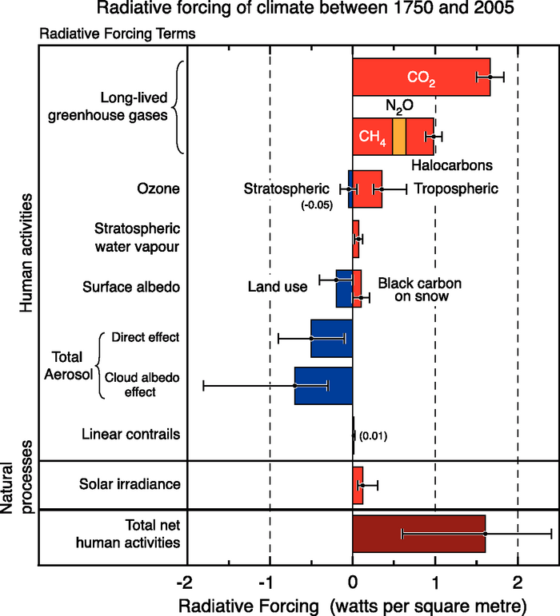

A look at how rate constant uncertainties effect atmospheric chemistry transport models
By Ben Newsome
bn506@york.ac.uk
The importance of inputs

(GEOS-5)
The Chemistry
The Arrhenius equation
$$ k = A e^{-E_a / (k_B T)} $$
JPL / IUPAC
The rate equations and errors are obtained from sources including JPL and IUPAC
This gives A, E, one standard deviation in A, and one standard deviation in E
- Greatest certainty at 298k so errors increase with temperature perturbation
( IUPAC, JPL )
Reason for looking

(IPCC 2013)
Reasons for Using A GCM
- Can simulate the future
- Can compare to experiment
- Help understand the Earth system
- Easier to understand and follow errors then a Earth system coupled model
GEOS-Chem
'GEOS–Chem is a global 3-D model of atmospheric composition driven by assimilated meteorological observations from the Goddard Earth Observing System (GEOS) of the NASA Global Modeling Assimilation Office (GMAO) . It is developed and used by research groups worldwide as a versatile tool for application to a wide range of atmospheric composition problems.'
(Daniel J. Jacob et al)
Methods for Looking at Rate Equation Errors
- Theoretical
- Simulation
- Brute Force
Theoretical
- For large systems of coupled differential equations, systems can be worked out that can calculate uncertainties from input parameters at time T using Fourier analysis.
- Theoretical is hard work
(R.I.Cukier)
Emulation
- Using statistical methods, can calculate the relationship between each input parameters.
- Adjoint methods
- Easier to implement then Theoretical, but computationally less efficient.
( Ronald M Errico )
Brute Force
- Run the model multiple times with rate constant perturbations coded in.
- Very computationally inefficient compared to other models
- Easiest to implement
- Good science doesn't have to be efficient science
Conclusion
- By Inspecting rate constant uncertainties in CTMs, we can look to see what areas of work need improving to reduce errors in the future
- Can provide more accurate analysis of current CTMs
References
GEOS-5 - http://gmao.gsfc.nasa.gov/GEOS/
IUPAC - Ammann, M., Cox, R. A., Crowley, J. N., Jenkin, M. E., Mellouki, A., Rossi, M. J., Troe, J., and Wallington, T. J.: Evaluated kinetic and photochemical data for atmospheric chemistry: Volume VI – heterogeneous reactions with liquid substrates, Atmos. Chem. Phys., 13, 8045-8228, doi:10.5194/acp-13-8045-2013, 2013.
JPL - Sander, Stanley Paul, et al. "Chemical kinetics and photochemical data for use in atmospheric studies evaluation number 15." (2006).
IPCC (2013) - Stocker, D. Qin. "Climate change 2013: The physical science basis." Working Group I Contribution to the Fifth Assessment Report of the Intergovernmental Panel on Climate Change, Summary for Policymakers, IPCC (2013).
Daniel J. Jacob et al - Bey, Isabelle, et al. "Global modeling of tropospheric chemistry with assimilated meteorology: Model description and evaluation." Journal of Geophysical Research: Atmospheres (1984–2012) 106.D19 (2001): 23073-23095.
R.I.Cukier - Cukier, R. I., et al. "Study of the sensitivity of coupled reaction systems to uncertainties in rate coefficients. I Theory." The Journal of Chemical Physics 59.8 (2003): 3873-3878.
Ronald M Errico - Errico, Ronald M. "What is an adjoint model?." Bulletin of the American Meteorological Society 78.11 (1997): 2577-2591.
End
- Any questions?